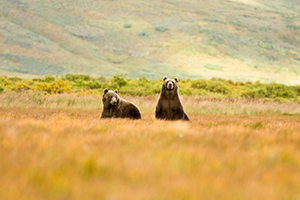
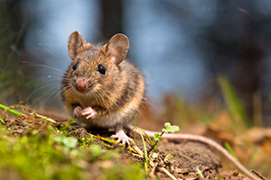
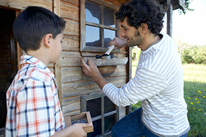
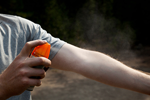

Wildlife
 ShareCompartir
ShareCompartir
CDC would like to thank MAJ Justin Schlanser, DVM, MPH, Diplomate of the American College of Veterinary Preventive Medicine, for his careful review of these pages.
Wildlife includes any undomesticated animal living in the wild, including those hunted for food, sport, or profit. Many people enjoy watching wildlife, and studies have shown that positive encounters with wildlife can have profound, life-changing effects on people. If you and your pets spend time outdoors around wildlife, you need to be aware of the diseases that can spread from wildlife to you and your pets.
Because wild animals can carry diseases without appearing to be sick, it is important to enjoy wildlife from a distance. Close contact with wildlife or their urine or droppings can spread these diseases to people and pets.
To protect yourself and your family from getting sick:
- Avoid hand-feeding wildlife.
- Avoid playing or working in areas where there are wildlife droppings.
- Leave orphaned animals alone. Often the parents are close by and will return for their young.
- Always wash your hands and the hands of children with running water and soap after working or playing outside, especially in areas where wildlife have been spotted.
By following some simple health tips, you are less likely to get sick from wildlife in the United States.
The most common diseases associated with wildlife that can cause human illness are:
Aeromoniasis (Aeromonas spp.)
Aeromonas is a type of bacteria that is commonly found in fresh and brackish water. This germ can cause disease in stressed fish and amphibians. Aeromonas spp. can cause discoloration of the limbs of amphibians and the fins of fish and can cause internal bleeding in these aquatic animals.
Though it very rarely happens, people can become infected when they handle infected fish or accidentally swallow contaminated food or water. If these germs are swallowed, Aeromonas infections can cause nausea, vomiting, and diarrhea. Skin infections can happen if the bacteria get into open wounds or scrapes. More severe disease can happen in children or people with weakened immune systems.
Practicing healthy habits, including hand washing, will reduce the risk of Aeromonas infection.
Anthrax (Bacillus anthracis spp.)
Anthrax is a naturally occurring disease of animals caused by a type of bacteria called Bacillus anthracis. People and animals can get anthrax when they accidentally breathe in or swallow spores in contaminated soil, food, or water. The greatest risk is from contact with bodily fluids of an animal that has anthrax or has recently died from anthrax. Anthrax can also get into open wounds. People who live in areas where anthrax has occurred should consider vaccinating their livestock against the disease.
Anthrax is a serious but rare disease in the United States. The symptoms of anthrax depend on the route of infection and can take anywhere from 1 day to more than 2 months to appear. All types of anthrax have the potential, if untreated, to spread throughout the body and cause severe illness and even death. To prevent anthrax, be aware of areas where anthrax is present and wear gloves when handling animal carcasses from those regions. Use care when processing bloated or swollen carcasses so that accumulated gasses blow away from you when the carcass is opened.
Baylisascaris procyonis (Raccoon roundworm spp.)
Baylisascaris infection is caused by roundworm eggs found in raccoon, bear, and skunk droppings. The disease is passed to people and animals if they accidentally ingest contaminated food or soil.
If a person or dog ingests the eggs, the worm larvae then hatch inside them and can migrate through the body. Human infections are rare but can be severe if the parasites invade the eye (ocular larva migrans), organs (visceral larva migrans), or brain (neural larva migrans).
Raccoon roundworm can be prevented by avoiding areas frequented by raccoons. If you need to clean raccoon droppings up, wear gloves and use caution so as not to kick up dust. Always wash your hands after working or playing in dirt.
Botulism (Clostridium botulinum spp.)
C. botulinum produces a toxin that causes botulism, a rare but serious condition in humans. Clostridium botulinum is a type of bacteria that can be found in the intestines of many marine and freshwater species of fish worldwide. Though rare, outbreaks of botulism can be associated with fish, including aquatic game, canned foods, and smoked fish. Affected fish show few signs of illness, though some fish may have pale gill colorings or abdominal swelling.
A person with botulism can develop double vision, blurred vision, drooping eyelids, and paralysis, which can result in death. People are commonly exposed through the environment or contaminated food, such as smoked fish products. To protect yourself from botulism, avoid fishing in areas where there are dead fish or waterfowl and cook all fish thoroughly. Anyone who thinks they may have botulism should seek emergency medical care.
Brucellosis (Brucella spp.)
Brucellosis is a bacterial disease that affects the ability of animals to reproduce. The disease can be spread to humans through contact with the birthing tissues from infected animals or through drinking unpasteurized (raw) milk. Among wildlife; bison; elk; caribou; moose; feral pigs; and some marine mammals can be infected with Brucella. Infected animals may have decreased appetite, weight loss, behavioral changes, and lack of energy, but most animals infected with brucellosis show no signs of illness. Brucellosis affects the reproductive organs and can cause miscarriage in animals and occasionally people.
People who hunt or eat fresh game meat are at highest risk for contracting brucellosis. They may be exposed through skin wounds while dressing a carcass or by eating undercooked meat. People who are infected with brucellosis will usually become sick within 6-8 weeks of exposure. Sick people will have flu-like symptoms that last 2-4 weeks. Sometimes brucellosis can become a chronic illness that can be difficult to treat.
Prevent brucellosis by wearing gloves while handling fresh carcasses and thoroughly cooking any meat that will be eaten.
Cryptococcosis (Cryptococcus neoformans spp.)
Cryptococcosis is an infection that is caused by a fungus named Cryptococcus neoformans. This fungus can be found in soil and bird droppings, especially droppings from pigeons. When dried bird droppings are disturbed, dust containing the fungus can be released into the air and be inhaled by people, cats, and dogs.
Most people do not become sick with cryptococcosis, but people with weakened immune systems may be at risk. Signs of disease include headaches, fever, cough, shortness of breath, and night sweats.
Prevent cryptococcosis by avoiding enclosed areas where pigeons or other wild birds roost.
Dermatophilosis (Lumpy wool, Strawberry footrot)
Dermatophilosis is a disease caused by a type of bacteria that can infect the skin and hair of both people and animals. The disease is spread from animals to people through touching an infected animal. Deer are the most common wildlife infected. Affected animals may have a “paintbrush” appearance of matted hair. The matted spots will often have scabs or crusts with pus. Other infected animals may show no symptoms at all.
This disease is most common among people who raise deer or who have contact with fawns. People who handle an infected animal may get pus-filled blisters on their hands and arms. These sores are usually not painful but can develop into shallow, red ulcers that scar.
Wear gloves and protective clothing when working with any animals, especially those with the classic “paintbrush” matted hair appearance, to reduce the risk of getting this disease.
Echinococcosis (Hydatid cyst disease spp.)
Echinococcosis is a parasitic disease caused by eating or drinking food or water contaminated with tapeworm eggs or through contact with an infected animal. This parasite is a tapeworm that can form large fluid-filled cysts in the tissues of animals or people who accidentally eat the eggs. The adult tapeworm can be found in foxes, coyotes, cats, and other wild predators. Animals become infected by eating the tissue of an infected animal. Infected animals rarely show any signs of disease but can have a large number of adult tapeworms.
Although the Echinococcus parasite invades many different organs of the body, most people who are infected with the disease will not have any signs of illness for years. Symptoms start when the slow-growing cysts become large enough to press on the organs they have invaded. The tapeworms grow slowly in several different organs of the body but are most commonly found in the liver and lungs.
Prevent echinococcosis by avoiding stool of wild canids, thoroughly cooking game meat, and practicing healthy habits, including hand washing.
Edwardsiellosis (Edwardsiella tarda spp.)
Edwardsiella tarda is a type of bacteria associated with fresh and saltwater animals, such as fish, amphibians, reptiles, and mammals. E. tarda is known to cause serious illness in fish. Affected fish may show abnormal swimming behavior, discoloration of the fins or skin, bulging or increased opacity of the eyes, and other complications.
People can become infected by accidentally swallowing contaminated water or through handling infected fish. Affected people commonly get nausea, vomiting, and/or diarrhea. People with weak immune systems may also be at risk for more serious disease.
Wash your hands before and after handling fish to reduce the risk of edwardsiellosis.
Erysipeloid (Erysipelothrix rhusiopathiae spp.)
Erysipelothrix rhusiopathiae is a type of bacteria that causes erysipeloid, a skin condition that people can develop after contact with infected fish, poultry, or pork. Healthy fish often carry the bacteria on their scales with no signs of illness.
People, especially fish handlers, can become infected through open wounds on their hands. Affected people will usually develop a warm, raised, red, and intensely itchy area of skin at the site of the contaminated wound. If the infection spreads from the skin to deeper tissues, arthritis or more serious signs of illness (fever, weakness, muscle aches, headaches, etc.) may develop.
People who handle fish regularly should wear gloves and wash their hands often to reduce the risk of this disease.
Giardiasis (Giardia spp.)
Giardia is a parasite that causes diarrheal illness in animals and people. Giardia is transmitted to animals and people through food or water contaminated with stool. Though different types of Giardia affect humans and animals, both the human and animal types are carried by wildlife, including beavers, muskrats, deer, coyotes, and rodents. Pets may become infected after drinking from puddles or ponds or swallowing infected stool from other animals. Affected animals may have diarrhea, greasy stools, and dehydration.
In people, the symptoms of giardiasis may include diarrhea; gas; greasy stools; abdominal pain; nausea; and vomiting. Symptoms can last 1–2 weeks.
To avoid Giardia infection, hikers and backpackers should always treat water before offering it to their pets or drinking it themselves. People should also wash their hands often and use caution when swimming or wading in potentially contaminated ponds or lakes to avoid swallowing the water.
Hantavirus
Hantavirus is a virus that can cause severe respiratory disease. It is spread through accidentally breathing in virus particles in dust from dry rodent urine or through contact with rodents or their droppings or nests.
Early signs in people include fever, headache, muscle aches, vomiting, diarrhea, abdominal pain, dizziness, and chills.
Follow CDC’s cleaning guidelines for cleaning areas that may have a rodent infestation, and air out unused buildings before entering.
Histoplasmosis (Histoplasma capsulatum)
Histoplasmosis is a fungal disease that is spread to people by breathing in dust from pigeon or bat droppings. Fungal spores are found in the environment, especially in areas with bird and bat droppings. Birds do not get sick from exposure to histoplasmosis.
Very few people become infected with histoplasmosis. People who do become sick tend to develop pneumonia-like symptoms (fever, chest pains, and a dry or nonproductive cough) within 1–3 weeks after exposure. Infants, older people, and those with weakened immune systems are more susceptible to the fungus and might develop more serious illness.
People with weak immune systems should avoid activities such as disturbing material where there are bird or bat droppings, cleaning chicken coops, exploring caves, and cleaning, remodeling, or tearing down old buildings.
Leptospirosis (Leptospira spp.)
Leptospirosis is a bacterial disease of humans and animals that is transmitted through contaminated water and urine or other body fluids from an infected animal. The Leptospira spp. bacteria can infect raccoons; skunks; squirrels; opossums; deer; rodents, and other wild animals without any signs of disease. Though it is difficult to detect early stages of leptospirosis in animals, the disease can lead to kidney and liver failure if left untreated.
People who become infected with leptospirosis might not have any symptoms of the disease. Others will have nonspecific flu-like symptoms (fever, headache, chills, vomiting, rash) within 2–7 days after exposure. These symptoms usually resolve without medical treatment but can reappear and lead to more severe disease (yellow skin and eyes, rash, kidney or liver failure, meningitis).
Some ways to prevent leptospirosis from wildlife are to avoid contact with environments potentially contaminated with animal urine and to avoid swallowing water from lakes, rivers, or swamps while swimming.
Lyme disease (Borrelia burgdorferi)
Lyme disease is a bacterial disease that affects humans and animals bitten by the Ixodes species of ticks. Rodents and other wildlife are reservoirs of the disease. Most infections occur from the nymphal-stage ticks, which are tiny and difficult to remove.
Infected people will typically have a red “bull’s eye” rash (erythema migrans) at the site of the tick bite that appears about 7 days after being bitten. Flu-like symptoms quickly follow the rash. If not treated, this disease can spread to other parts of the body and cause symptoms such as arthritis and loss of facial muscle tone (Bell’s palsy).
Lyme disease can be prevented by avoiding exposure to ticks, using a tick repellent, and by finding and removing ticks from your pets and your family as soon as possible after returning from a tick-infested area.
Lymphocytic choriomeningitis virus (LCMV)
Lymphocytic choriomeningitis virus (LCMV) can be transmitted through the urine, droppings, saliva, or cage material of infected wild and domestic rodents, wild hogs, skunks, raccoons, and squirrels. Infected animals may appear normal or show more significant signs, including weight loss, hunched posture, and ultimately death.
Human infections with LCMV are rare. Symptoms are similar to those of the common flu (fever, stiff neck, loss of appetite, muscle aches, headache, nausea, and vomiting) and often occur 1–2 weeks after exposure.
Prevent LCMV infection by avoiding contact with wild rodents and their droppings.
Mycobacteriosis (Mycobacterium marinum)
Mycobacterium marinum is a type of bacteria that causes disease in fish, reptiles, and amphibians. It is spread to people and animals through contaminated aquarium water. All fish are susceptible to mycobacterium, but fresh water species seem to be most affected. This disease is slow growing in fish. Affected fish may stop eating, lose their fins or scales, develop sores, or appear deformed.
Though infection in humans is rare, people can become sick with mycobacteriosis after coming into contact with contaminated water through minor cuts and skin abrasions. People with this disease, commonly known as “fish tank granulomas,” develop warm raised, red areas of the skin. Skin lesions can leave long-lasting scars.
Reduce the risk for mycobacterium by washing your hands after handling reptiles, amphibians, and fish.
Plague (Yersinia pestis)
Plague is a rare bacterial disease that affects animals and humans and is spread by infected fleas. Rodents like mice, rats, prairie dogs, and squirrels can carry plague. Plague is found primarily in the western United States. People and animals can be infected when they are bitten by infected fleas or when they handle blood or tissues of infected animals. Wild and domestic carnivores (especially cats) can also become infected by eating infected rodents. Cats usually have fever, weight loss, and loss of energy with enlarged glands. Wild rodents may or may not have any signs of disease.
People most often become infected with plague through flea bites or from contact with body fluids of infected animals. Hunters may be at increased risk. Bubonic plague is the most common form of plague that affects people. Symptoms include a sudden onset of high fever, chills, headache, malaise, and swollen glands (lymph nodes). The other two forms of plague, septicemic and pneumonic, cause more severe disease.
Plague can be prevented by keeping fleas away from your pets and family and by wearing gloves while handling or skinning potentially infected animals.
Rabies
Rabies, a fatal neurologic disease in animals and humans, is caused by a virus. The rabies virus can infect most mammals, including bats; bears; beavers; deer; wild canids such as fox and coyotes; and felids such as mountain lions and bobcats; raccoons; skunks; opossums; and other small mammals. Animals and people are most commonly infected through bites from rabid animals. Infected animals may have a variety of signs but most often have sudden behavioral changes and progressive paralysis. Rabies can be prevented in some animals by vaccination.
The first symptoms in humans can start days to months after exposure and include generalized weakness, fever, and headache. Within a few days symptoms will progress to confusion, anxiety, behavioral changes, and delirium.
If you have been bitten by a wild animal that wasn’t acting normal, contact your health care provider right away for treatment. Once symptoms appear, it is almost always too late for treatment.
Rat-bite fever (Streptobacillus moniliformis)
Rat bite fever is a rare bacterial disease transmitted by bites or scratches from infected rodents. It can also be spread by exposure to contaminated water, food, or rodent urine. The disease is typically seen in rats. Infected rats can carry the infection but appear healthy. However, other animals infected with rat-bite fever may develop arthritis, skin infections, pneumonia, and swollen lymph nodes.
In people infected with rat-bite fever, signs range from flu-like symptoms and a rash to more severe infections of the joints, liver, heart, lungs, brain, and blood, if left untreated.
Prevent Rat bite fever from wild rodents by avoiding contact with wild rodents and their urine.
Rocky Mountain spotted fever (RMSF, Rickettsia rickettsii)
Rocky Mountain spotted fever (RMSF) is a bacterial disease transmitted to dogs and humans by ticks. Dogs show a variety of symptoms similar to those in humans, including fever, lameness, coughing, vomiting and diarrhea, and swelling of the face or extremities.
People who are infected with RMSF generally start getting sick 2–14 days after exposure. Symptoms may include fever, rash, headache, nausea, vomiting, abdominal pain, and muscle pain. RMSF can develop into a serious illness if not promptly treated.
Rocky Mountain spotted fever disease can be prevented by avoiding exposure to ticks, using a tick repellent, and by finding and removing ticks from your pets and your family as soon as possible after returning from a tick-infested area.
Salmonellosis (Salmonella spp.)
Salmonella spreads to people through contaminated food (eggs and meat) or contact with stool of certain animals, including wildlife. In the wild, people usually become sick with Salmonella through direct contact with an infected animal’s stool or by accidentally drinking contaminated water. While it usually does not make the animals sick, Salmonella can cause serious illness when it is passed to people.
People exposed to Salmonella might have diarrhea, vomiting, fever, or abdominal cramps. Infants, elderly persons, and people with weakened immune systems are more likely than others to develop severe illness.
Prevent salmonellosis by avoiding stool of wild animals, thoroughly cooking game meat, and practicing healthy habits, including hand washing.
Trichinellosis or Trichinosis (Trichinella spiralis)
Trichinellosis is a parasitic disease caused by eating the raw or undercooked meat of animals infected with Trichinella. Trichinella infections are common in wild, meat-eating animals such as bears and cougars as well as some other meat and plant-eating animals like wild hogs. People usually become infected by consuming raw or undercooked meat that is infected, especially from bear and wild hogs. Most animals infected with Trichinella do not show any signs of illness.
People infected with Trichinella can have a variety of symptoms depending on the amount of parasite ingested and how strong their immune system is. The first symptoms of trichinellosis include nausea, vomiting, diarrhea, and abdominal pain. Infected people may then develop facial swelling and flu-like symptoms such as headache, fever, chills, and muscle pain. In very severe infections, people can lose control of their movements and have heart and breathing problems. Trichinella can cause death if severe infections are left untreated.
Prevent trichinellosis from wildlife by thoroughly cooking game meat.
Tuberculosis (Mycobacterium tuberculosis complex)
Mycobacterium tuberculosis complex is a group of bacteria that causes a disease called tuberculosis. Bison, buffalo, opossums, badgers, and deer can all become infected.
People can get tuberculosis if they ingest undercooked meat, accidentally inhale the bacteria, or are infected through skin cuts or scrapes. Depending on the route of infection, people may have sores; swollen lymph nodes; difficulty breathing; weight loss; night sweats; fever; or intestinal upset.
Avoid tuberculosis from wildlife by thoroughly cooking meat and by washing your hands after handling wildlife.
Tularemia (Francisella tularensis)
Tularemia is a bacterial disease that can spread to people through bites from ticks or deer flies, handling or consuming infected animals, accidentally swallowing contaminated water, or inhaling contaminated dust. Though typically a wildlife disease, tularemia has been reported in all U.S. states except Hawaii. Affected animals may have sudden onset of fever, weakness, decreased appetite, and reduced mobility. Within a few hours or days, the animal can become stiff and die.
People exposed to tularemia can have a variety of symptoms ranging from fever, chills, headache, and muscle aches to skin ulcers; swollen and painful lymph nodes; inflamed eyes; sore throat; mouth sores and diarrhea. They may also develop pneumonia.
People exposed to an infected animal should be seen by their doctor immediately because treatment works best when started early.
You can reduce your risk of tularemia by handling dead animals with gloves, cooking game meat thoroughly, wearing insect repellent, and when possible, avoiding mowing over dead animals during outside work.
Vesicular stomatitis
Vesicular stomatitis is a disease caused by a virus. Vesicular stomatitis is primarily a disease of livestock, but people and several species of wildlife can become infected. Infected animals may have fluid-filled blisters, called vesicles, around the mouth, on their feet, or under the belly.
It is very rare for people to get vesicular stomatitis. Infections can occur when people handle sick animals or contaminated tissues and blood from sick animals. Infected people may have a variety of symptoms ranging from no signs of illness to flu-like symptoms and blisters.
Reduce the risk for Vesicular stomatitis by washing your hands after handling affected wildlife.
Vibriosis (Vibrio spp.)
Vibrio are bacteria that are mostly found in saltwater and cause serious disease in marine fish. People usually get sick with vibriosis after eating raw or undercooked fish or shellfish or after swallowing contaminated water. Fish affected by Vibrio can have symptoms ranging from deep skin ulcers to more wide-spread signs of skin darkening, scale loss, swelling of the abdomen, and loss of appetite.
In people, Vibrio can cause nausea, vomiting, and diarrhea. Some types of Vibrio can also cause skin infections from contact with contaminated water.
People can prevent vibriosis infections by eating cooked fish and shellfish and by avoiding exposure of open wounds or broken skin to warm salt or brackish water, and avoiding raw shellfish harvested from such waters.
West Nile Virus (WNV)
West Nile Virus is carried by birds and transmitted by mosquitoes. People, birds, and horses get WNV by being bitten by an infected mosquito. Most animals infected with WNV will show no signs of illness. Some birds will die of the disease.
Most people who become infected with WNV do not have any signs of illness; however, people who do become ill usually have flu-like symptoms. A small percentage of people with WNV infection develop a more serious neurologic illness, such as encephalitis or meningitis (inflammation of the brain and surrounding tissues).
Prevent West Nile Virus by using mosquito repellents, wearing long-sleeved shirts and long pants, and limiting outdoor exposure from dusk to dawn. Using air conditioning, installing window and door screens, and reducing mosquito breeding sites, can further decrease the risk for WNV exposure.
In this section
Wildlife should always be enjoyed from a distance. If you are close enough that the animal changes its behavior (for example, stops eating or runs away), you are too close! Wild animals can carry diseases but not appear to be sick at all, so staying away is the safest way to enjoy viewing wildlife. Follow these simple tips to help protect your family and pets from getting diseases from wildlife. Additional tips and information about outdoor safety and disease control can be found under “More Information.”
Protect your home
- Keep windows and doors closed or screened and cover any holes or openings to prevent bats, rodents, or other wild animals from entering your home, church, school, or other buildings. 
- Clean up trash around your home and keep your garbage cans closed. Garbage and trash can attract unwanted visits from wildlife.
- Do not leave food (bait) outside to attract animals to your backyard. This brings the animals closer together and close to you, and this makes it easier for disease to spread.
- Keep compost and wood piles at least 100 feet away from buildings to help reduce rodent infestations in the building.
- Make sure pets do not have access to stagnant water sources (ponds, bird baths, etc.) that are also used by wildlife.
- Find rodent- and bat-proofing information under the More Information tab.
Don’t handle wildlife
- Teach children to never handle unfamiliar animals, wild or domestic, even if they appear friendly or harmless.
- Do not touch or pick up dead animals with your bare hands. Consider calling animal control to remove any dead animals.
- Never adopt wild animals or bring them into your home. Do not try to save or rescue wild animals. If you have already found an animal, refer to the National Wildlife Rehabilitator’s Association’s Help! I’ve found an animal page.
- If an animal appears sick or hurt, call animal control to help. Do not touch young animals that appear to be abandoned. Often their parents are close by waiting for you to leave before they return to their young.
- Protect wildlife in your national parks and local recreational areas by staying on trails and following visitor guidelines, including those for trash disposal.
Protect yourself from disease
- Make washing your hands a routine practice before eating or drinking and whenever you return from outside.
- Take care of bites and scratches:
- Wash wounds well with soap and running water.
- Contact your health care provider right away.
- If you seek medical attention, make sure to tell them if you have had exposure to wildlife.
- Keep bugs away:
- Use a mosquito and tick repellent when spending time outdoors.
- Use a monthly flea and tick preventive on your pets.
- Ask your veterinarian how to protect your pets from wildlife diseases such as rabies, leptospirosis, and giardia.
- Call animal control right away if an animal, wild or domestic, is acting strangely or out of character.
Publications and materials
Websites
Rabies
Rabies (For Kids)
CDC site especially designed for children
World Rabies Day
GARC: rabiesalliance.org
Bats and Rabies
CDC rabies site
Rabies multimedia
CDC Rabies site: podcasts, videos, eCards, and more
Rodent and bat control
Rodent Control
CDC Rodents site
Keeping Bats Out Of Your House
CDC Rabies site
Disease Vectors and Pests
CDC Healthy Housing Reference Manual; highly detailed
Tick prevention
Ticks
CDC comprehensive site
Tick Tactics
CDC BAM site
Camping Health and Safety Tips
CDC Family Health site
Tick Management Handbook
CDC and Connecticut Agriculture Experiment Station
Protect Yourself from Ticks and Mosquitos
CDC NIOSH Fast Facts
Factsheets
It’s Open Season On Ticks [ PDF - 2 pages ]
CDC Ticks site
Features
Outdoor Safety
CDC
Podcasts
Zoonoses
CDC; How foxes, raccoons, and bats play an important role in the ecology of infectious diseases, such as rabies
Camping Safety
CDC Kidtastics podcast
Additional information
Alexander KA, Pleydell E, Williams MC, Lane EP, et al. Mycobacterium tuberculosis: An Emerging Disease of Free-Ranging Wildlife. Emerging Infectious Diseases[serial on the Internet]. 2005 Jun [Cited Sep 18, 2015].
Bird feeder Maintenance and Hygiene
National Audubon Society
Disease Precautions for Hunters
American Veterinary Medical Association: highly detailed recommendations
Help! I’ve Found An Animal!
National Wildlife Rehabilitators Association: What to do with orphaned wildlife
Venomous Snakes
CDC NIOSH
Raccoon Latrines: Identification and Clean-up [ PDF - 1 pages ]
CDC Baylisascaris Infection site
- Page last reviewed: October 1, 2015
- Page last updated: October 1, 2015
- Content source: